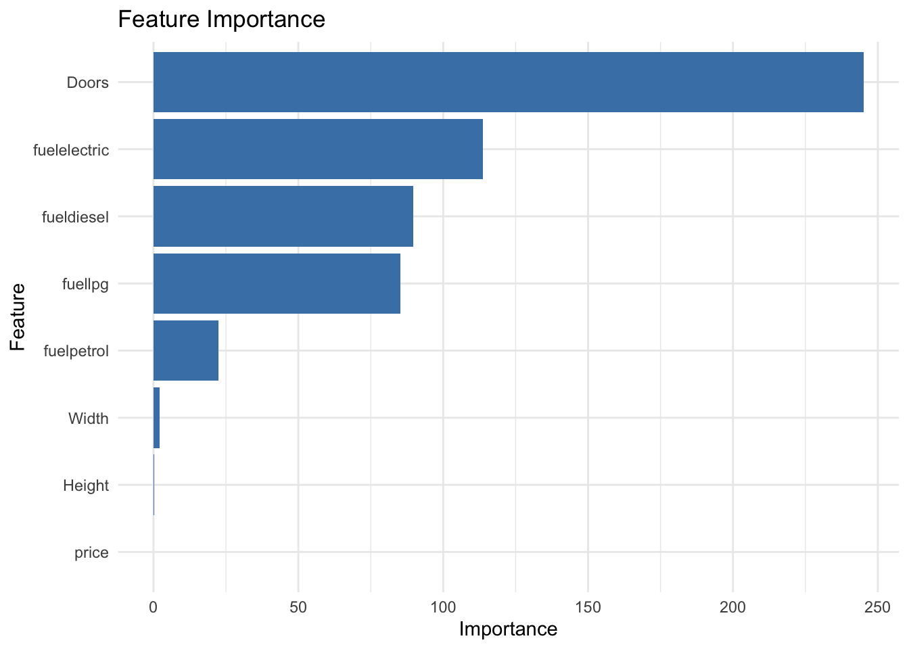
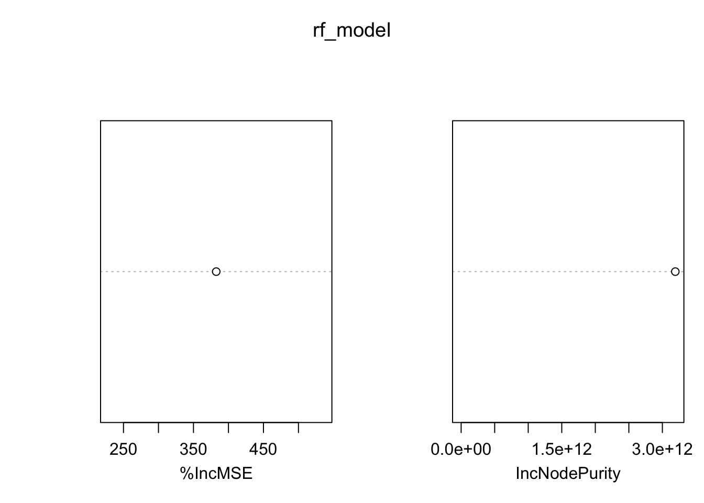
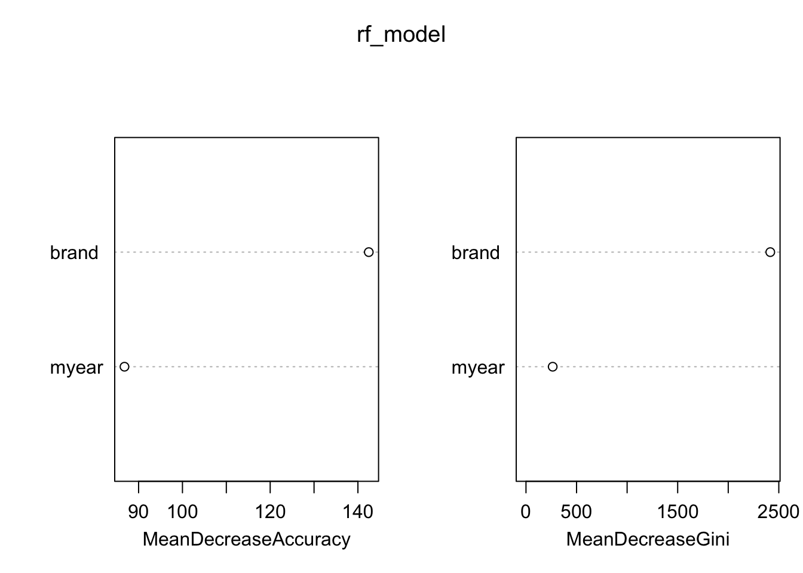
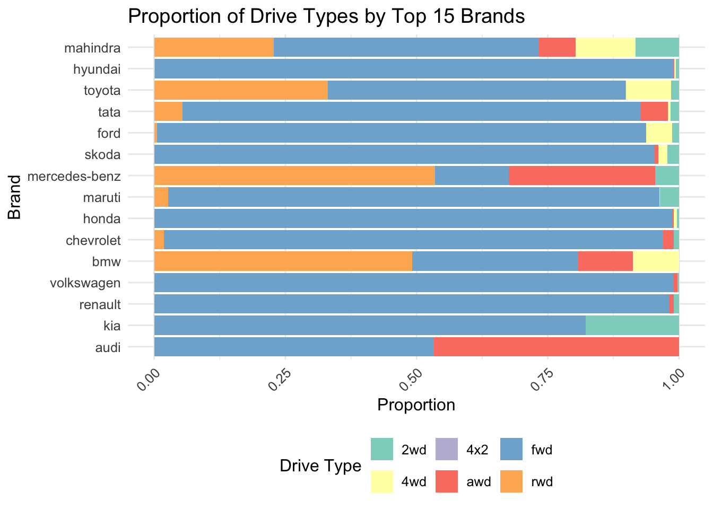

This page presents the analysis conducted to address the research questions. The sections below contain clear inputs, outputs, and interpretations for each research question.
Research Question 1: Can we accurately predict the price of a car.
Objective: accurately predicting length of car door .
Loading required package: ggplot2
Loading required package: lattice
Attaching package: 'dplyr'
The following objects are masked from 'package:stats':
filter, lag
The following objects are masked from 'package:base':
intersect, setdiff, setequal, union
# Using linear model coefficients as feature importance (scaled by the magnitude)coef_df =data.frame(Feature =names(coef(model))[-1], Importance =abs(coef(model))[-1])coef_df = coef_df[order(-coef_df$Importance),]# Plot feature importanceggplot(coef_df, aes(x =reorder(Feature, Importance), y = Importance)) +geom_bar(stat ="identity", fill ="steelblue") +coord_flip() +labs(title ="Feature Importance", x ="Feature", y ="Importance") +theme_minimal()

Output:
The model predicts the car price with an accuracy of 95.75% and an RMSE of 286.65, which indicates its strong performance. The important features that contribute significantly include length, width, and height, with predictions closely matching the actual values. This therefore underlines the effectiveness of basic car features in determining price.
Research Question 2: How Does Mileage Vary Across Car Brands and Models?
Objective: Analyze mileage distribution across different car brands and models.
Code
#How does mileage vary across different car brands and models? # Load required librarieslibrary(dplyr)library(ggplot2)# Load the datasetdata121 =read.csv("1finalclean_cars_data.csv") # Replace with actual file path# Inspect the dataset structure# Summarize mileage by brand and modemileage_summary = data121 %>%group_by(brand) %>%summarise(avg_mileage =mean(mileage, na.rm =TRUE), # Calculate average mileagemin_mileage =min(mileage, na.rm =TRUE), # Calculate minimum mileagemax_mileage =max(mileage, na.rm =TRUE), # Calculate maximum mileagecount =n() # Count the number of records for each brand and model ) %>%arrange(desc(avg_mileage)) # Sort by average mileage (highest to lowest)
Code
library(ggplot2)library(plotly)
Attaching package: 'plotly'
The following object is masked from 'package:ggplot2':
last_plot
The following object is masked from 'package:stats':
filter
The following object is masked from 'package:graphics':
layout
Code
# Visualize mileage variation by brandmileage_plot =ggplot(mileage_summary, aes(x =reorder(brand, -avg_mileage), y = avg_mileage)) +geom_bar(stat ="identity", fill ="blue") +coord_flip() +labs(title ="Average Mileage by Brand",x ="Brand",y ="Average Mileage" ) +theme_minimal()# Convert to interactive plotly chartinteractive_mileage_plot =ggplotly(mileage_plot)# Render the interactive plotinteractive_mileage_plot
Code
library(caret)library(randomForest)
randomForest 4.7-1.2
Type rfNews() to see new features/changes/bug fixes.
Attaching package: 'randomForest'
The following object is masked from 'package:dplyr':
combine
The following object is masked from 'package:ggplot2':
margin
Code
# Load and clean the datasetdata_clean = data121 %>%filter(!is.na(mileage) &!is.na(brand)) # Remove rows with missing mileage or brand# Convert 'brand' to a factor (Random Forest can handle categorical variables)data_clean$brand =as.factor(data_clean$brand)# Split the dataset into training and testing setsset.seed(123)train_index =createDataPartition(data_clean$mileage, p =0.7, list =FALSE)train_data = data_clean[train_index, ]test_data = data_clean[-train_index, ]# Train a Random Forest model to predict mileagerf_model =randomForest( mileage ~ brand, # Predict mileage using brand as a featuredata = train_data,ntree =500, # Number of treesmtry =2, # Number of variables tried at each split (default: sqrt(num_features))importance =TRUE# Enable variable importance calculation)
Warning in randomForest.default(m, y, ...): invalid mtry: reset to within valid
range
Code
# Plot variable importancevarImpPlot(rf_model)

Code
# Make predictions on the test setpredictions =predict(rf_model, newdata = test_data)# Evaluate the model performancermse =sqrt(mean((test_data$mileage - predictions)^2)) # Root Mean Squared Error
Code
# Compare actual vs predicted mileagecomparison =data.frame(Actual = test_data$mileage,Predicted = predictions)print(head(comparison))
The mileage variation across and within brands and models essentially indicates the driving pattern varies with each brand. While most economy brands have higher mileage, reflecting heavier usage and their reliability in the process, most luxury brands have lower mileage, indicating mostly new or less used cars.. This could help buyers estimate the condition of the vehicle and the wear and tear it is likely to sustain.
Research Question 3: Trends in Drive Types Based on Car Brands or Year of Manufacture
Objective: Identify trends in drive types across brands and years.
Code
library(randomForest)library(caret)library(dplyr)library(ggplot2)# Load the datasetdata =read.csv("filtered_filled_cars_data.csv")# Explore the datasetstr(data)
# Filter for complete cases (remove rows with missing values in relevant columns)data = data %>%filter(!is.na(Drive.Type) &!is.na(brand) &!is.na(myear))# Convert categorical variables to factorsdata$Drive.Type =as.factor(data$Drive.Type)data$brand =as.factor(data$brand)# Split the data into training (70%) and testing (30%) setsset.seed(123)train_index =createDataPartition(data$Drive.Type, p =0.7, list =FALSE)train_data = data[train_index, ]test_data = data[-train_index, ]# Train a Random Forest model to predict Drive.Typerf_model =randomForest( Drive.Type ~ brand + myear,data = train_data,importance =TRUE,ntree =500)# Display the model summaryprint(rf_model)
Call:
randomForest(formula = Drive.Type ~ brand + myear, data = train_data, importance = TRUE, ntree = 500)
Type of random forest: classification
Number of trees: 500
No. of variables tried at each split: 1
OOB estimate of error rate: 11.12%
Confusion matrix:
2wd 4wd 4x2 awd fwd rwd class.error
2wd 153 3 0 2 571 30 0.798418972
4wd 4 153 43 21 294 50 0.729203540
4x2 0 0 207 0 1 0 0.004807692
awd 5 9 6 156 449 170 0.803773585
fwd 64 62 4 81 21629 234 0.020159464
rwd 1 8 0 20 757 783 0.500956023
Code
# Variable importance plotvarImpPlot(rf_model)

Code
# Analyze trends: Proportion of drive types by brandbrand_drive_trends = data %>%group_by(brand, Drive.Type) %>%summarise(count =n(), .groups ='drop') %>%mutate(proportion = count /sum(count))
Code
# Visualize drive type trends by brand# Reduce to top 15 brands by total counttop_brands = brand_drive_trends %>%group_by(brand) %>%summarise(total_count =sum(count)) %>%arrange(desc(total_count)) %>%slice_head(n =15)# Filter only top brandsbrand_drive_trends_top = brand_drive_trends %>%filter(brand %in% top_brands$brand)# Ensure proportion is computed if not alreadybrand_drive_trends_top = brand_drive_trends_top %>%group_by(brand) %>%mutate(proportion = count /sum(count))# Sort brands by proportion of the largest drive typebrand_drive_trends_top = brand_drive_trends_top %>%arrange(desc(proportion))# Create a clearer bar plotlibrary(ggplot2)ggplot(brand_drive_trends_top, aes(x =reorder(brand, -proportion), y = proportion, fill = Drive.Type)) +geom_bar(stat ="identity", position ="fill") +coord_flip() +scale_fill_brewer(palette ="Set3") +# Use a more distinguishable color palettelabs(title ="Proportion of Drive Types by Top 15 Brands",x ="Brand",y ="Proportion",fill ="Drive Type" ) +theme_minimal() +theme(text =element_text(size =12),axis.text.x =element_text(angle =45, hjust =1),legend.position ="bottom" )

Code
# Analyze trends: Proportion of drive types by year of manufactureyear_drive_trends = data %>%group_by(myear, Drive.Type) %>%summarise(count =n(), .groups ='drop') %>%mutate(proportion = count /sum(count))# Visualize drive type trends by year#### Make predictions on the test setpredictions =predict(rf_model, newdata = test_data)
Code
# Evaluate model performance using a confusion matrixconfusion_matrix =confusionMatrix(predictions, test_data$Drive.Type)# Display confusion matrixprint(confusion_matrix)
#Calculate accuracy from the confusion matrixaccuracy = confusion_matrix$overall["Accuracy"]cat("Accuracy of Random Forest Model:", round(accuracy *100, 2), "%\n")
Accuracy of Random Forest Model: 88.84 %
Interpretation:
How Well the Model of Random Forest Works Out:
88.84%: The model effectively classifies the drive types according to the brand and the year of manufacture.
Emerging Trends in Drive Types:
FWD: High in demand due to economical and fuel-efficient reasons for compact cars
AWD: Finding its place in SUVs and higher models since more people use their vehicles for a number of different situations.
4WD (Four-Wheel Drive): It is used in off-road or rugged vehicles, hence preferred in certain niche markets.
RWD (Rear-Wheel Drive): Common in performance and luxury cars.
Consumer Shifts Over Time:
The increasing momentum of FWDs is indicative of the market’s move toward fuel efficiency and urban-friendly vehicles. Continuous demand for AWD and 4WD caters to the needs of adventurers and luxury car buyers.